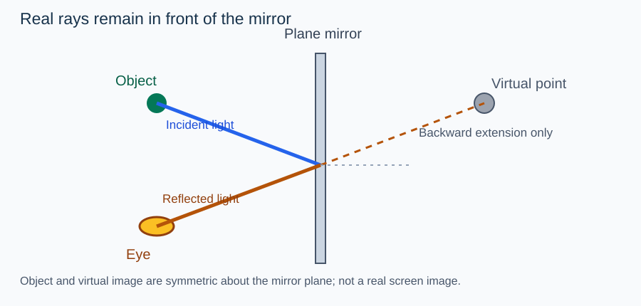

Continuous Core1A textbook manuscript · R2 author candidate
Status: AUTHOR_EXPOSED_DRAFT · SCIENCE_REVIEW_HOLD · NOT A PUBLISHED TEXTBOOK. Scope: simple ray reflection, plane mirrors, concave/convex spherical mirrors, formulas and school experiments. Coupled multiple curved mirrors and advanced motion inversions are EXTENSION unless independently justified.
1. A ray is a geometrical model
In an ordinary clear medium, light can often be modeled as traveling along approximately straight rays. A ray diagram communicates direction of propagation and where light can travel. It does not depict a ray as a physical solid string. The model is useful when the relevant dimensions are much larger than the wavelength of light and when scattering and diffraction are not central to the observation.
A mirror presents a reflective boundary. Draw the incident ray, the point of reflection, and the normal (a line perpendicular to the local surface). The angle of incidence and angle of reflection are measured from that normal. The ordinary law of reflection is i=r, with incident and reflected directions in the same plane as the surface normal.
Diagnostic: A student measures 35° from the mirror surface and calls it the angle of incidence. The angle from the normal is 55°. The arithmetic is easy; the decisive act is choosing the physical reference line.
2. Rotating the mirror changes the reflected ray
Suppose a narrow beam approaches a plane mirror with its direction fixed while the mirror is rotated through a small angle \theta in the plane of the rays. The surface normal rotates by the same \theta; the reflected ray direction rotates by approximately 2\theta when the geometry remains within the same specular-reflection regime. This doubled rotation is a consequence of equal angles about a moving normal, not a memorized law for any random three-dimensional motion.
Draw the normal before and after the rotation and reflect the same incident direction on both drawings. The geometry makes the doubled change visible. A student who merely writes 2\theta without specifying the incident ray and the rotation plane has not justified the result.
3. Plane mirrors make virtual images
When reflected rays from an object enter the eye, the visual system traces them backward along the incoming directions. For a point object in front of an ideal plane mirror, those backward extensions intersect at a corresponding point behind the mirror. No reflected light actually travels through the mirror to that virtual point. A screen placed at the virtual point cannot collect a focused real image there.
The image is as far behind the ideal plane mirror as the object lies in front of it, measured perpendicular to the plane. But that rule applies to the position of the mirror plane and the object; an oblique observer's line of sight does not shorten the physical perpendicular image distance.
Worked anchor: Put a bead 40 cm in front of a fixed plane mirror. The virtual image lies 40 cm behind the mirror. A narrow ray diagram with two reflected lines verifies the location through backward extensions.
4. Lateral inversion depends on the chosen axes
A plane mirror reverses the coordinate direction perpendicular to its surface in the geometric transformation from object to image, not every left/right direction in the room. The familiar “left-right reversal” language arises from how we compare an image with a person turned around to face us. A mirror behind an object, a mirror to the side, and a rotated mirror require explicit reference axes.
For a face-on mirror in the plane x=0, a point at (x,y,z) has virtual counterpart (-x,y,z). This representation makes the actual transformation precise. It also helps explain why labels printed on a shirt look reversed when compared with ordinary forward-facing writing.
Counterexample: Two observers use opposite coordinate directions. They may label “left” differently, yet the actual geometric mapping across the plane is unchanged.
5. Moving mirrors and apparent image motion
Choose a one-dimensional coordinate perpendicular to the plane mirror. If the mirror is at position m and the object at x_o, the virtual image is at x_i=2m-x_o. This can be derived directly from symmetry about the mirror plane; the object-to-mirror and mirror-to-image signed distances are opposite.
If the object is fixed and the mirror shifts by \Delta m, the image shifts by 2\Delta m. If the mirror is fixed and the object moves by \Delta x_o, the image displacement is -\Delta x_o. When both move, add both changes: \Delta x_i=2\Delta m-\Delta x_o.
Worked anchor: A mirror moves 4 cm toward a stationary object. The image moves 8 cm in the mirror's direction in a fixed room coordinate. Before assigning “toward” or “away,” declare the positive axis and which side of the mirror contains the object.
6. Two plane mirrors and the visibility of repeated images
Two plane mirrors can reflect rays successively. Some configurations produce multiple virtual images. The popular 360^\circ/\theta-1 counting shortcut for an angle \theta is not universally sufficient without considering integer constraints, object position, orientation, mirror sizes and the visibility of rays. The actual construction should proceed by reflecting rays or virtual object positions successively.
In a ray sketch with two nonparallel mirrors, mark each bounce and check whether the ray physically reaches the second mirror. A construction that places an image behind a wall outside the reflectors' finite extents may not correspond to an actually visible image.
7. The geometry of spherical mirrors
A spherical mirror is a portion of a curved reflecting surface. Its pole is the midpoint on the principal axis; its centre of curvature is the centre of the original sphere. The local normal at a point of reflection points toward the centre of curvature.
For paraxial rays near the axis, a concave mirror can converge rays from a distant object toward a principal focus; a convex mirror makes reflected rays diverge as if from a virtual focus behind the mirror. In the paraxial approximation, the focal length magnitude is about half the radius of curvature, f\approx R/2. This is not exact for rays far from the axis; spherical aberration is a model limit.
8. Concave mirror image zones
A real object outside the centre of curvature of a concave mirror produces a reduced inverted real image between the focus and the centre in the ideal paraxial construction. An object at the centre produces an equal-size inverted image at the centre. As the object approaches the focus from beyond it, the real image moves outward and grows.
At the focus the ideal reflected rays are parallel and do not meet at a finite screen position. When the real object is within the focal length, the reflected rays diverge and the virtual image appears upright behind the mirror. This is why a concave shaving mirror magnifies a close face while a distant streetlamp can make a real focused spot.
Study technique: Construct at least two independent reflected rays and interpret their actual or extended intersection before consulting the formula.
9. Convex mirrors and the field of view
A convex spherical mirror reflects rays outward. For a real object at distance magnitude x>0, under the standard Cartesian convention with incident light from the left, take u=-x and a convex mirror focal length f>0. Using 1/f=1/v+1/u, the image position is v=fx/(f+x)>0, behind the mirror.
The magnification is m=-v/u=f/(f+x). Because 0<m<1, the virtual image is erect and reduced for any finite real object within this model. A wider angular field of view is useful in rear-view mirrors; it does not mean that the mirror shows objects at their true angular sizes.
Worked anchor: A convex mirror has f=12 cm and an object at x=24 cm. Then v=8 cm and m=1/3. Both must agree with the backward-extended ray diagram. A negative v here would contradict the chosen sign convention.
10. Sign conventions are part of the scientific model
The mirror equation is not a magic unsignposted relation. Using a Cartesian coordinate positive to the right along the incident light, object distances in front of a mirror can be negative, and virtual image distances behind a convex mirror positive. A consistent convention also determines concave focal-length signs and magnification signs.
An algebraically obtained root must be tested against the physical domain: real versus virtual, front versus behind, and whether the assumed object location permits the reported image. This is the essence of many D3 MODEL tasks.
Cross-check: For the convex example, 1/12=1/8-1/24=3/24-1/24=2/24. The equation and geometry agree.
11. Mirror magnification and measurement
Linear magnification is the ratio of image height to object height with sign encoding orientation under a declared convention. For paraxial spherical mirrors m=-v/u. Interpreting its sign requires the axis convention, while interpreting its magnitude requires both heights to be measured consistently.
A classroom concave-mirror focal-length experiment can place a screen near the focus when the target is sufficiently distant. But a nearby source does not supply truly parallel rays, and the screen position has uncertainty. Therefore a single sharpness estimate is an approximation rather than an exact measurement of f.
12. Compound optical setups and the enrichment gate
A mirror used with another lens or mirror creates a multi-stage system: the image from the first element becomes a candidate object for the second. The second element may receive a virtual object or an image on an unexpected side, depending on geometry. The student must fix a direction of propagation and coordinate frame at each stage.
Detailed two-curved-mirror inversions and moving curved-mirror problems go into EXTENSION/HOLD until a science and syllabus review supports them. An independently authored transfer task can test the general principle but cannot certify that every formula in an advanced construction is a required NSEJS concept.
13. Put the ray model, geometry and proof together
A ray diagram has to preserve real propagation directions, surface normals and sign meanings. The law i=r explains a reflected ray; the backward extension explains a virtual image; the mirror formula summarizes paraxial image geometry. Each has a different role. They should be taught in that order to prevent formula-first guessing.
The three chapter-wide cognitive targets are EXPLAIN (why a virtual image appears), REPRESENT (preserve axes and ray directions), and MODEL/JUSTIFY (choose a valid mirror relation and defend image bounds). A fourth advanced transfer can combine object and mirror motion with a changing observer coordinate, but its D4 band remains unqualified until exact-task review.
Exit investigations: Derive the plane mirror relation x_i=2m-x_o; show where a virtual image appears in a concave mirror when its object crosses the focus; explain why the convex mirror cannot form a real screen image of a real object within the paraxial approximation; and construct a reflected ray when the surface is rotated. Native Core1B candidate records cover PH09-08 and PH09-02.
Academic boundary: These are original author-exposed explanations, not accepted source-linked Core1A for each subtopic. Further figure science QA, sign convention audit, native C05 binding and B1–B7 review remain necessary.